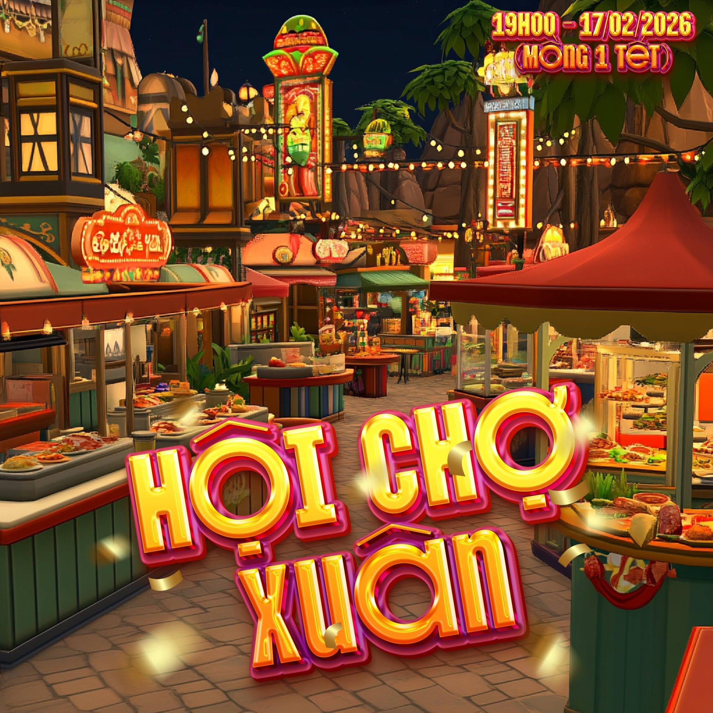

⛪ CHƯƠNG TRÌNH PHỤNG VỤ CHI TIẾT
- 📌 24 Tết (Thứ Tư, 11/02/2026): 16h00 Xét mình - Xức dầu bệnh nhân.
- 📌 29 Tết (Thứ Hai, 16/02/2026): 17h30 Lễ Tất Niên | 24h00 Lễ Giao Thừa.
- 📌 Mồng 1 Tết (Thứ Ba, 17/02/2026): 05h00 Lễ Tân Niên (Cầu bình an cho Năm Mới).
- 📌 Mồng 2 Tết (Thứ Tư, 18/02/2026): Lễ Kính Mới Tổ Tiên (05h00 tại Nhà Thờ, 16h30 tại Đất Thánh).
- 📌 Mồng 3 Tết (Thứ Năm, 19/02/2026): 04h45 Lễ Thánh Hóa Công Ăn Việc Làm.
- 📌 Mồng 4 Tết (Thứ Sáu, 20/02/2026): LỄ TRO - Giữ chay và kiêng thịt (04h45 & 16h30).
🎪 CHƯƠNG TRÌNH VUI XUÂN TẠI GIÁO XỨ
Bên cạnh các Giờ Lễ Phụng Vụ, Xứ Đoàn Phê-rô Đoàn Công Quý tổ chức các hoạt động vui chơi đón xuân cho thiếu nhi và cộng đoàn:

Hội Chợ Xuân (19h00 Mồng 1 Tết)
Quay Số Lộc Xuân (19h00 Mồng 2 Tết)
Kính mời quý cộng đoàn tham dự đông đủ và đúng giờ để dâng lên Chúa những lời tạ ơn đầu xuân trọn vẹn nhất.